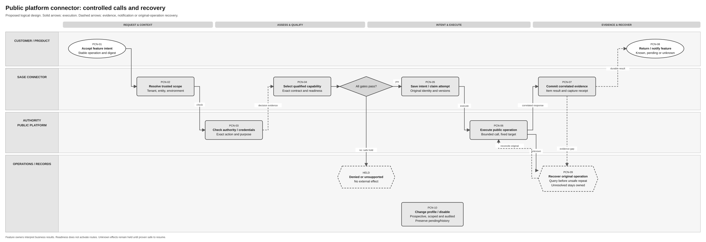
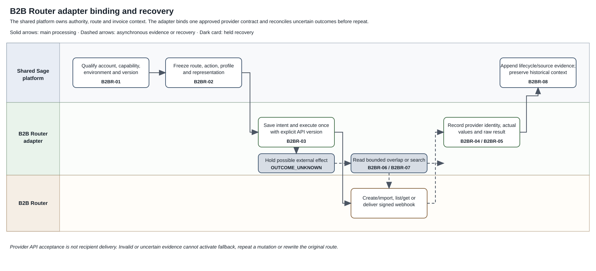

Unpublished design proposal. Specs 011, 013 and 017 and current Confluence sources remain unchanged.
Provider Connectivity Logical Feature Specification
Solution Summary · Sequence and Reuse Assessment · Folder
Revision overview
This view develops the scenarios in the initial SPEC-SEI-034 assessment into one behaviour and acceptance view across 011, 013 and 017. Existing PCN, GPA, B2BR and journey IDs keep their meanings. The source specifications remain unchanged. This view connects their behaviour; it does not move their detailed registers or approve component ownership.
The scope is Spain public/private connectivity. Public platform terminology follows the original context sources identified in 036 §3.1; FR API terms describe only the API reuse candidate. Actual API/build coverage, provider SPFE coverage, representation pairs and the first delivery subset remain open. All terms follow the shared glossary.
1 Behaviour authority and outcomes
The scenario table in §2 is the authoritative statement for this combined view. Refer to the original requirement IDs for retained detail. Business and functional behaviour stays separate from proposed component allocation in 036.
| Outcome | Meaning and limit |
|---|---|
| Qualified capability | Evidence supports the named direction, operation, business scope, environment and profile. It does not activate a route. |
| Saved operation receipt | Requested work is recorded for recovery. It does not prove an external effect or delivery. |
| External result observed | Correlated source evidence is available at its actual meaning. Delivery, public copy, buyer decision, payment and reporting remain separate results. |
| File available | The required file is captured and permitted for access, with its source or derived role. Notification or metadata alone is insufficient. |
| Held or outcome unknown | A named owner and next action exist. Assignment to support does not complete the action. |
The authenticated caller, represented party, provider account scope and credential purpose remain separate facts. Read and mutation access must preserve tenant, business and environment isolation. GPA-03; PCN-02/03; B2BR-I02; REF-BASE.
2 Scenarios, required behaviour and safe recovery
These scenarios cover the main, alternative and failure paths. They do not create new routing policy or change the business behaviour in the journey specifications.
| Scenario / actor and condition | Required behaviour and observable result | Failure or recovery; retained authority |
|---|---|---|
| Qualification — customer requests public/private send and receive | Check current authority and record readiness separately for each operation, direction, environment and representation profile. Keep connection readiness separate from route activation. | Missing, stale or conflicting evidence holds the affected capability. Show the evidence needed to recheck. GPA-02; B2BR-01/I03; SPC-01–03. |
| Access — product or partner acts for a business | Check the trusted caller and current permission for the represented business, action and objects. Return only permitted files and evidence. | Deny unauthorised access without disclosing another scope. Recheck current authority before recovery creates a new effect. GPA-03; PCN-02/03; B2BR-I02. |
| Public submission — sender requests Remisión de facturas electrónicas on the qualified public route | Preserve the approved invoice/action context and prepared file. Return a saved receipt, then correlated public results at their actual meaning. | Unsupported profile or missing authority holds transmission. A possible external effect with missing result follows the unknown-outcome scenario. PCN-01–09; sending SPEC-SEI-023. |
| Private send — sender has a qualified private route and a separate public-copy duty where applicable | Preserve one execution owner for each action and independent delivery/copy results. The owning sending journey determines applicability and issuance coordination. | Retain any completed action. Recover only the rejected, pending or unknown action. Private delivery failure cannot choose public recipient delivery automatically. GPA-05/06; B2BR-I06/07; SPEC-SEI-023. |
| Public consultation and download — authorised recipient requests Consulta and Descarga operations | Preserve consultation coverage, invoice references and captured source files before making the required representation available to the product. | Empty results and unavailable queries have different outcomes. Incomplete pages or failed capture keep the prior safe progress point. Use the service names and exact operations in 036 §3.1, sourced from context. No public notification contract is assumed. SPFE-S03; receiving SPEC-SEI-026; PCN handoffs. |
| Private receive — recipient obtains a notification or polling result | Authenticate and correlate the observation. Capture the required source bytes and metadata before product availability. Retain raw source evidence for lifecycle interpretation. | Invalid or uncorrelated observations are held. Missing notifications use qualified independent reads; repeated observations cannot repeat product processing. B2BR-05/06; B2BR-A07–09; SPEC-SEI-026. |
| Representation — authorised product requests a format different from the captured source | Preserve source bytes and identify derived files with source, mapping, validation and profile evidence. Report available representations clearly. | Hold unsupported pairs or changed/ambiguous file identity. Preserve signature evidence; do not label a generated PDF as the exchanged original. GPA-07; SPEC-SEI-008; SPEC-SEI-026. |
| Unknown outcome — sender or operations cannot establish an external result | Preserve original action, input, route/profile version and correlation. Establish the original result before repetition unless the qualified idempotency contract proves safe retry. | A failed query is not proven absence. Ambiguous evidence remains an owned hold. Do not create a new action, key, provider or environment to bypass uncertainty. PCN-09; GPA-08; B2BR-07. |
| Duplicate observations — public and private sources expose the same business invoice | Apply qualified invoice identity and source correlation. Keep source observations and action evidence distinct while preventing duplicate product processing. | Matching invoice numbers alone are insufficient. Preserve ambiguous observations for resolution; do not discard a source file as a guessed duplicate. SPEC-SEI-026; GPA-08. |
| Continuity — route or provider changes with earlier work open | New work uses the approved effective route. Earlier invoices retain their original context and permitted file/status access. | Historical dependencies block destructive release or require an approved handover. Do not replay old work through the new route. SPC-04/08; B2BR-08. |
3 Process and activity order
Use the existing source diagrams and activity IDs. The responsibility groups follow the glossary: Customer / accountant, ERP / product, Domain Service - E-Invoice Service, Domain Service - Other Services, Operations / support, and Public / private platforms. Diagrams can omit groups with no activity. These are logical responsibilities, not approved deployments.
3.1 Public platform connector — SPEC-SEI-011

Full-size SVG · Editable Draw.io · PNG.


This is the unchanged diagram from 011. PCN-01–08 receive the authorised feature request, check scope and credentials, confirm support, save intent, execute and return evidence. PCN-09 reconciles uncertain effects; PCN-10 covers controlled operations. The connector executes the public operation. Sending, receiving and lifecycle retain their business decisions. A denied or unsupported request has no new external effect; an unknown result is checked before repetition.
3.2 B2B Router provider adapter — SPEC-SEI-017

Full-size SVG · Editable Draw.io · PNG.


This is the unchanged diagram from 017. B2BR-01–04 qualify the binding, prepare and execute the assigned operation, then save the provider response. B2BR-05/06 handle notifications and independent reads. B2BR-07 resolves unknown outcomes; B2BR-08 preserves historical access. A provider observation retains its source meaning. Import, recipient delivery and product availability remain separate outcomes.
The §2 scenarios link these source activities across public and private work. A file-conversion failure preserves captured source files. A public-copy failure preserves completed private delivery. Each incomplete result retains its owner and safe next action. GPA-06/07/08; PCN-07/09; B2BR-04/07.
4 Country, provider and file boundaries
| Boundary | Functional rule and source |
|---|---|
| Shared behaviour | Apply isolation, authority, independent action identity, source preservation and owned recovery consistently. Existing implementation coverage remains unknown. REF-BASE. |
| Spain rules | Apply identity, route, public-copy and reporting rules only under the selected Spain binding. Applicability remains with the canonical journey and final-BOE references. This view adds no legal interpretation. REF-JOURNEYS. |
| Provider capability | Qualify direction, operation and profile independently. A supported transport or tax-report feature does not enable another capability. B2BR-I03/I13; GPA-02. |
| Business syntax versus transport | Validate the actual selected file profile independently from API metadata and transport packaging. The draft public profile and FR reuse evidence differ; the exact comparison belongs in 036 §3. SPFE-S08; INT-SND01 / INT-RCV01. |
| Original versus derived file | Preserve the captured file and its role. A format name, rendered document or temporary download URL does not by itself prove original-file custody. GPA-07; SPEC-SEI-026. |
5 Functional acceptance and retained detail
These are proposed acceptance scenarios. No implementation tests have run. Engineering qualification in 036 §5 adds contract and compatibility evidence to these checks.
| Scenario coverage | Demonstrable result | Existing acceptance / evidence |
|---|---|---|
| Qualification; Access | Public submission can be qualified while receiving remains held. A wrong business, account or environment cannot obtain files or mutate work; current routes remain unchanged. | B2BR-A01/A02; GPA access checks; profile and negative-scope fixtures. |
| Public submission; Private send | Private delivery succeeds while public copy fails or is unknown. Recovery retains delivery and addresses only the copy. Direct public work does not create an unnecessary second copy. | PCN-SPFE-A01–03; B2BR-A03/A06; sending SPEC-SEI-023 and its issuance/copy checks. |
| Public consultation and download; Private receive | A notification, metadata result or partial page cannot mark missing files available. Lost and repeated observations preserve complete, duplicate-safe acquisition. | B2BR-A07–09; receiving SPEC-SEI-026; page/capture and missed-event fixtures. |
| Representation | Source and derived files remain distinguishable. An unsupported mapping or incompatible provider substitution holds the affected result and preserves known successes. | B2BR-A04/A09/A14; GPA-07; source/derived and mapping fixtures. |
| Unknown outcome; Duplicate observations | A lost mutation response is reconciled against original work. Ambiguous matches remain held. Dual-source intake preserves both observations and avoids duplicate product processing. | B2BR-A06/A08; PCN-SPFE-A03; receiving SPEC-SEI-026. |
| Continuity | Route changes affect only approved new work. Unresolved historical dependencies stop destructive release. | B2BR-A10/A11; SPC-04/08; transition and historical-access fixtures. |
| Country and implementation reuse | Another country does not inherit Spain identity, copy or reporting rules. A proposed reused build records actual coverage, gaps, owner and conformance evidence before activation. | GPA-A17/A18; B2BR-A13/A14; country isolation and build qualification. |
Detailed PCN, GPA, B2BR, interaction/data inventories and original gates remain in 011, 013 and 017. The current journey folders retain issuance, receiving, lifecycle and exit decisions. No source is superseded by this review set.
REF Source references
Sources support only the claims and elements stated below. Product requirements and proposed Sage controls have separate authority from external contracts. The Spain evidence guide records the baseline and unresolved conflicts.
| REF ID | Original source and version/date | Exact location, supported claim and limit |
|---|---|---|
| REF-BASE | SPEC-SEI-011, 013, 017, updated 20 October 2026; 014, current repository source. | 011 Part 1 §§1–2 and Part 4 gates; 013 Part 1 §§1–4 and GPA-05/08; 017 Parts 1–4; 014 SPC-01–08. Canonical draft design and scope references. Not approved external contracts or build evidence. |
| REF-JOURNEYS | Sending assessment, SPEC-SEI-024 and receiving assessment, SPEC-SEI-027, repository review set, 22 October 2026. | Sequences and reuse gaps; their linked logical specs retain detailed behaviour. Product/BA sources, not external contract proof. |
| SPFE-S08 | FormatosEntradaSalida.pdf, v0.1.0, 9 October 2026, marked BORRADOR. |
§5.1.1, p. 8: UBL 2.5 document types; §§5.3–5.9, pp. 14–15: pending service formats. Draft technical evidence; no blanket production or cross-profile compatibility claim. |
| INT-SND01 / INT-RCV01 | Supplied FR sending guide extract and receiving guide extract, received 22 October 2026; original attachment hashes recorded there. | Sending prerequisites and steps 2–5; receiving §§3.1–4 and format notes. Reading aids for supplied API evidence; original canonical URLs, OpenAPI revisions and deployed builds are unavailable. They establish reuse candidates and conflicts, not Spain support. |
| REF-DTS | SPEC-SEI-008 — Spain mapper migration to DTS, current repository source. | Reuse qualification and migration scope. Preferred existing transformation candidate; selected builds, mappings, rule packs and operations still require evidence. |
| SPFE-S03 | CatalogoServicios.pdf, v0.1.0, 9 October 2026. | §6.1, p. 10; §§6.2 and 6.4–6.7, pp. 10–15. Original public service names, submission, consultation and download roles. Technical descriptions do not qualify live access or complete business schemas. |